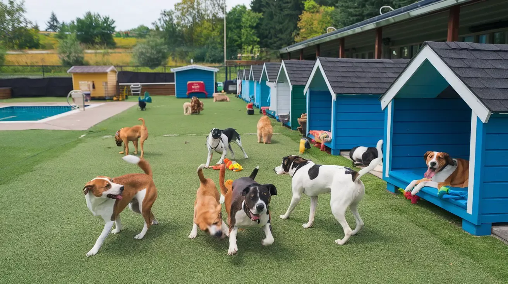
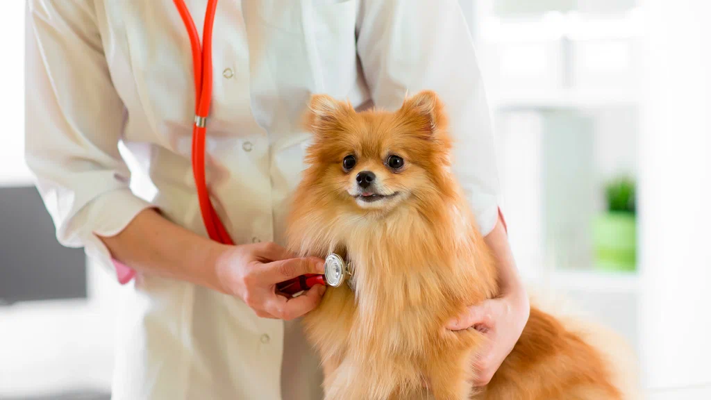
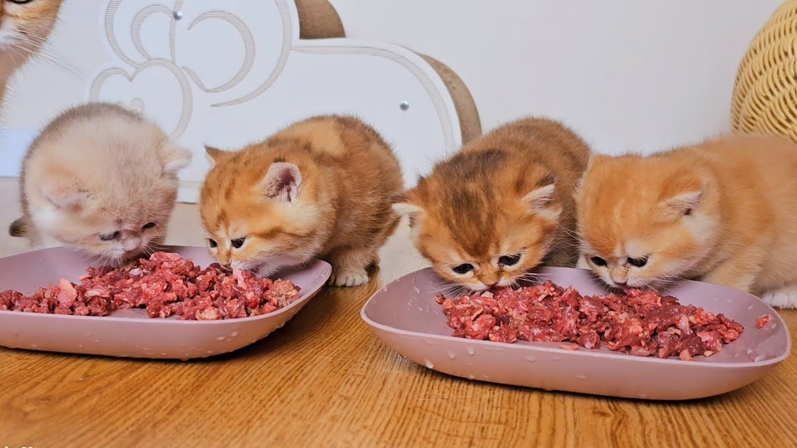

Как мы заботимся о животных
У каждого животного есть свое чистое, сухое и светлое место. Кошки живут в вертикально ориентированных вольерах с полками, собаки — в просторных боксах или комнатах с выходом на выгул.


У каждого животного есть свое чистое, сухое и светлое место. Кошки живут в вертикально ориентированных вольерах с полками, собаки — в просторных боксах или комнатах с выходом на выгул.

Наличие ветеринарных паспортов, графиков прививок и обработок от паразитов. Мы знаем особенности здоровья каждой породы.

Кормление профессиональными кормами супер-премиум класса или сбалансированной «натуралкой». У каждой группы (котята/щенки, пожилые, беременные) свой рацион.

1. Анкетирование и интервью
Заводчик задает вопросы, чтобы понять ваш образ жизни:
Состав семьи: Есть ли маленькие дети или аллергики? Все ли члены семьи согласны на собаку?
Опыт: Были ли собаки раньше и что с ними стало? (Тревожный звонок — если предыдущие животные часто «убегали» или «умирали от странных болезней»).
График работы: Сколько времени щенок будет проводить в одиночестве? (Для щенка 8–10 часов одиночества — это очень много).
2. Проверка жилищных условий
Заводчик может попросить фото/видео или даже приехать в гости (редко, но бывает):
Тип жилья: Своя квартира или съемная? Если съемная, есть ли письменное разрешение от собственника.
Безопасность: Нет ли открытых балконов, торчащих проводов или ядовитых растений.
Загородный дом: Если собака будет жить во дворе, проверяют наличие надежного забора и теплого вольера (цепное содержание в хороших питомниках запрещено).
3. Социальные сети
Часто заводчики просят ссылку на профиль. Они смотрят:
Общую адекватность человека.
Наличие других животных и отношение к ним.
Ценности и образ жизни (например, если человек постоянно в разъездах, это повод отказать в продаже щенка).
4. Проверка по «черным спискам»
У опытных заводчиков и волонтеров есть общие базы и чаты, где числятся:
Перекупщики: Те, кто берет породистых собак для дальнейшей перепродажи.
Разведенцы: Те, кто планирует «вязать» собаку без документов ради наживы.
Живодеры и безответственные владельцы: Люди, замеченные в жестоком обращении.
5. Юридическая часть
Если проверка пройдена, в Договоре купли-продажи фиксируются обязательства хозяина:
Соблюдение правил содержания и выгула.
Обязательная вакцинация и медпомощь.
Пункт о возврате: Обязательство вернуть собаку заводчику (или уведомить его), если вы больше не можете её содержать.